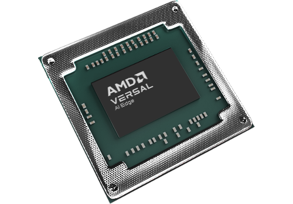

Quick Start Guide for Versal™ AI Edge VEK280¶
The AMD DPUCV2DX8G for Versal™ AI Edge is a configurable computation engine dedicated to convolutional neural networks. It supports a highly optimized instruction set, enabling the deployment of most convolutional neural networks. The following instructions will help you to install the software and packages required to support VEK280.
{kind=link}
Prerequisites¶
Host Requirements¶
Confirm that your development machine meets the minimum Host System Requirements.
Confirm that you have at least 100GB of free space in the target partition.
Applicable Targets¶
This quickstart is applicable to the VEK280
WSL¶
This is an optional step intended to enable Windows users to evaluate Vitis™ AI.
Although this is not a fully supported flow, in most cases users will be able to execute this basic tutorial on Windows. The Windows Subsystem for Linux (WSL) can be installed from the command line. Open a Powershell prompt as an Administrator and execute the following command:
[Powershell] > wsl --install -d Ubuntu-20.04
The user can list all distribution options available and select an alternate provided that it meets Host System Requirements.
[Powershell] > wsl --list --online
You can start a specific distribution as follows:
[Powershell] > wsl -d Ubuntu-20.04
Quickstart¶
Clone the Vitis AI Repository¶
[Host] $ git clone https://github.com/Xilinx/Vitis-AI
Install Docker¶
Note
WSL users are advised to install Docker via Docker desktop. WSL users can optionally leverage Docker using the command line flow below, however it has been found that the docker daemon doesn’t start automatically in WSL. The instructions provided below may not work verbatim for WSL users.
Make sure that the Docker engine is installed according to the official Docker documentation.
The Docker daemon always runs as the root user. Non-root users must be added to the docker group. Do this now.
Verify Docker Installation¶
Perform a quick and simple test of your Docker installation by executing the following command. This command will download a test image from Docker Hub and run it in a container. When the container runs successfully, it prints a “Hello World” message and exits.
[Host] $ docker run hello-world
Finally, verify that the version of Docker that you have installed meets the minimum Host System Requirements by running the following command
[Host] $ docker --version
Pull Vitis AI Docker¶
In order to simplify this quickstart tutorial, we will utilize the Vitis-AI PyTorch CPU Docker to assess pre-built Vitis-AI examples, and subsequently perform quantization and compilation of our own model. It is generic, does not require the user to build the container, and has no specific GPU enablement requirements. More advanced users can optionally skip this step and jump to the Full Install Instructions but we would recommend that new users start with this simpler first step. Pull and start the latest Vitis AI Docker using the following commands:
[Host] $ docker pull xilinx/vitis-ai-pytorch-cpu:latest
Setup the Host¶
It will be useful to you later on to have the cross-compiler installed. This will allow you to compile target application code on your host machine inside Docker. Run the following commands to install the cross-compilation environment.
Note
Perform these steps on your local host Linux operating system (not inside the docker container). By default, the cross compiler will be installed in ~/petalinux_sdk_2023.1. The ~/petalinux_sdk_2023.1 path is recommended for the installation. Regardless of the path you choose for the installation, make sure the path has read-write permissions. In this quickstart, it is installed in ~/petalinux_sdk_2023.1
[Host] $ cd Vitis-AI/board_setup/vek280
[Host] $ sudo chmod u+r+x host_cross_compiler_setup.sh
[Host] $ ./host_cross_compiler_setup.sh
When the installation is complete, follow the prompts and execute the following command:
[Host] $ source ~/petalinux_sdk_2023.1/environment-setup-cortexa72-cortexa53-xilinx-linux
Note
If you close the current terminal, you must re-execute the above instructions in the new terminal interface. Also, if you forget to run this command outside of Docker, you can execute it later from within.
We are now ready to run the Docker container and cross compile one of the target applications. Notice that the /workspace directory in Docker corresponds to your /Vitis-AI
directory on the host. Thus you will note that [Docker] /workspace/examples/vai_runtime/resnet50_pt = [Host] Vitis-AI/examples/vaiexamples/vai_runtime/resnet50_pt.
[Host] $ cd ../..
[Host] $ ./docker_run.sh xilinx/vitis-ai-pytorch-cpu:latest
Activate the vitis-ai-pytorch conda enviornment.
[Docker] $ conda activate vitis-ai-pytorch
Cross compile the resnet50_pt example.
[Docker] $ cd examples/vai_runtime/resnet50_pt
[Docker] $ sudo chmod u+r+x build.sh
[Docker] $ bash –x build.sh
If the compilation process does not report an error and the executable file resnet50_pt is generated, then the host environment is installed correctly. If an error is reported, double-check that you executed the source ~/petalinux.... command.
Setup the Target¶
The Vitis AI Runtime packages, VART samples, Vitis-AI-Library samples, and models are built into the board image, enhancing the user experience. Therefore, the user need not install Vitis AI Runtime packages and model packages on the board separately.
Make the target / host connections as shown in the images below. Plug in the power adapter, ethernet cable, an HDMI monitor (optional), and connect the USB-UART interface to the host. If one is available, connect a USB webcam to the target.
Note
We recommend the Logitech BRIO for use with Vitis AI pre-built images. The Logitech BRIO is capable of streaming RAW video at higher resolutions than most low-cost webcams. When leveraging other low-cost webcams with the Vitis AI pre-built image, encoded video streams are actually decoded on the target’s ARM APU which can reduce inference performance.

Configure the Versal Boot Mode switch SW1 [1:4] to (ON,OFF,OFF,OFF).
Download the Vitis AI pre-built SD card image from the link below.
Use BalenaEtcher to burn the image file onto the SD card.

Insert the imaged SD card into the target and power up the board.
The VEK280 leverages a USB-C connector for JTAG+UART. Three consecutive UART ports will be enumerated (ie COM13,14,15).
Versal UART0
Versal UART1 &
System Controller UART
Connect a USB-C cable to the USB-UART connector. Open two terminal emulator windows. Choose Versal UART0 on one and System Controller UART on the other and use the following settings on the Serial Port:
Baud Rate: 115200
Data Bit: 8
Stop Bit: 1
No Parity
On Versal UART0 terminal, you should see the Versal device booting from the micro SD card, starting with the message “Xilinx Versal Platform Loader and Manager”. For more information on VEK280 setup, please refer to the user guide or base target reference designs.
The IP address for the target can be found with the command below.
[Target] $ ifconfig
If you are using a point-to-point connection or DHCP is not available, you can manually set the IP address:
[Target] $ ifconfig eth0 [TARGET_IP_ADDRESS]
Next, connect to the board via SSH. The password is ‘root’
[Host] $ ssh -X root@[TARGET_IP_ADDRESS]
If you have not connected a DisplayPort monitor, it is recommended that you export the display. If you do not do so, the examples will not run as expected.
[Target] $ export DISPLAY=[HOST_IP_ADDRESS]:0.0
Vitis-AI Model Zoo¶
You can now select a model from the Vitis AI Model Zoo. Navigate to the model-list subdirectory and select the model that you wish to test. For each model, a YAML file provides key details of the model. In the YAML file there are separate hyperlinks to download the model for each supported target. Choose the correct link for your target platform and download the model.
Take the ResNet50 model as an example.
[Host] $ cd /workspace
[Host] $ wget https://www.xilinx.com/bin/public/openDownload?filename=resnet50-vek280-r3.5.0.tar.gz -O resnet50-vek280-r3.5.0.tar.gz
Copy the downloaded file to the target using scp with the following command:
[Host] $ scp resnet50-vek280-r3.5.0.tar.gz root@[TARGET_IP_ADDRESS]:~/
Install the model package:
[Target] $ tar -xzvf resnet50-vek280-r3.5.0.tar.gz
[Target] $ cp -r resnet50 /usr/share/vitis_ai_library/models
Run the Vitis AI Examples¶
Download vitis_ai_runtime_r3.5.0_image_video.tar.gz from host to the target using scp with the following command:
[Host]$scp vitis_ai_runtime_r3.5.0_image_video.tar.gz root@[TARGET_IP_ADDRESS]:~/
Extract the
vitis_ai_runtime_r3.5.0_image_video.tar.gzpackage on the target.
[Target] $ cd ~
[Target] $ tar -xzvf vitis_ai_runtime_r3.5.0_image_video.tar.gz -C ~/Vitis-AI/examples/vai_runtime
Navigate to the example directory on the target. Take
resnet50as an example.
[Target] $ cd ~/Vitis-AI/examples/vai_runtime/resnet50
Run the example.
[Target] $ ./resnet50 /usr/share/vitis_ai_library/models/resnet50/resnet50.xmodel
An image should appear on the display connected to the target and the console should reflect the following output:
Image : 001.jpg
top[0] prob = 0.982662 name = brain coral
top[1] prob = 0.008502 name = coral reef
top[2] prob = 0.006621 name = jackfruit, jak, jack
top[3] prob = 0.000543 name = puffer, pufferfish, blowfish, globefish
top[4] prob = 0.000330 name = eel
These results reflect the classification of a single test image located in the ~/Vitis-AI/examples/vai_library/images directory.
PyTorch Tutorial¶
This tutorial assumes that Vitis AI has been installed and that the board has been configured as explained in the installation instructions above. For additional information on the Vitis AI Quantizer, Optimizer, or Compiler, please refer to the Vitis AI User Guide.
Quantizing the Model¶
Quantization reduces the precision of network weights and activations to optimize memory usage and computational efficiency while maintaining acceptable levels of accuracy. Inference is computationally expensive and requires high memory bandwidths to satisfy the low-latency and high-throughput requirements of Edge applications. Quantization and channel pruning techniques are employed to address these issues while achieving high performance and high energy efficiency with little degradation in accuracy. The Vitis AI Quantizer takes a floating-point model as an input and performs pre-processing (folds batchnorms and removes nodes not required for inference), and finally quantizes the weights/biases and activations to the given bit width.
Navigate to the cloned Vitis-AI directory and create a new workspace for your project. Here you will store the test dataset, models, and python scripts required for quantization.
[Host] $ cd ~/Vitis-AI
[Host] $ mkdir -p resnet18/model
Download the ImageNet 1000 (mini) dataset from Kaggle. This dataset is subset of the ILSVRC 2012-2017 dataset and comprises 1000 object classes, and contains 1,281,167 training, 50,000 validation, and 100,000 test images. You will need to create a Kaggle account to access this dataset. Move the downloaded Archive.zip file into the created /Vitis-AI/resnet18 folder and unzip the dataset.
[Host] $ cd resnet18
[Host] $ unzip Archive.zip
Your workspace directory should reflect the following:
├── Archive.zip
│
├── model
│
└── imagenet-mini
├── train # Training images folder. Will not be used in this tutorial.
│ └─── n01440764 # Class folders to group images.
└── val # Validation images that will be used for quantization and evaluation of the floating point model.
└─── n01440764
Navigate to the Vitis-AI directory and execute the following command to start Docker.
[Host] $ cd ..
[Host] ./docker_run.sh xilinx/vitis-ai-pytorch-cpu:latest
Note
When you start Docker as shown earlier, your /workspace folder will correspond to /Vitis-AI and your initial path in Docker will be /workspace. If you inspect docker_run.sh you can see that the -v option is leveraged which links the Docker file system to your Host file system. Verify that you see the created /resnet18 subfolder in your workspace:
[Docker] $ ls
Download the pre-trained resnet18 model from PyTorch to the docker environment and store it in the
modelfolder . This is the floating point (FP32) model that will be quantized to INT8 precision for deployment on the target.
[Docker] $ cd resnet18/model
[Docker] $ wget https://download.pytorch.org/models/resnet18-5c106cde.pth -O resnet18.pth
Note
The Vitis AI Model Zoo also provides optimized deep learning models to speed up the deployment of deep learning inference on adaptable AMD platforms. For this tutorial we have chosen to use an open-source PyTorch model to showcase that models from the community can also be deployed.
Copy the example Vitis AI ResNet18 quantization script to your workspace. This script contains the Quantizer API calls that will be executed in order to quantize the model.
[Docker] $ cd ..
[Docker] $ cp ../src/vai_quantizer/vai_q_pytorch/example/resnet18_quant.py ./
Your
workspace/resnet18directory should reflect the following:
├── Archive.zip
│
├── model
│ └── resnet18.pth # ResNet18 floating point model downloaded from PyTorch.
│
├── imagenet-mini
│ ├── train # Training images folder. Will not be used in this tutorial.
│ │ └─── n01440764 # Class folders to group images.
│ └── val # Validation images that will be used for quantization and evaluation of the floating point model.
│ └─── n01440764
│
└── resnet18_quant.py # Quantization python script.
Inspect
resnet18_quant.py. Observe the parser arguments that can be passed to the script via command line switchessubset_lenquant_modedata_dirandmodel_dir. We will set thedata_dirandmodel_dirarguments to align with our directory structure. If you wish to avoid extraneous typing and are manually entering these commands, you can simply edit the script to suit your use case.
[Docker] $ vim resnet18_quant.py
Use the sequence
<esc> :q!to exit vim without saving.
Run the command below to evaluate the accuracy of the floating point model.
[Docker] $ python resnet18_quant.py --quant_mode float --data_dir imagenet-mini --model_dir model
You should observe that the accuracy reported is similar to
top-1 / top-5 accuracy: 69.9975 / 88.7586
Next, let’s run the Model Inspector to confirm that this model should be compatible with the target DPU architecture.
[Docker] $ python resnet18_quant.py --quant_mode float --inspect --target DPUCV2DX8G_ISA1_C20B14 --model_dir model
Run the command below to start quantization. Generally, 100-1000 images are required for quantization and the number of iterations can be controlled through the the
subset_lendata loading argument. In this case, 200 images are forward propagated through the network, and these images are chosen randomly from the validation image set. Note that the displayed loss and accuracy that are output from this process are not representative of final model accuracy.
[Docker] $ python resnet18_quant.py --quant_mode calib --data_dir imagenet-mini --model_dir model --subset_len 200
On most host machines this command should complete in less than 1 minute even with the CPU-only Docker. If you leverage the CUDA or ROCm Dockers on a compatible machine, the Quantization process will be accelerated considerably. Let’s take a look at the output:
[Docker] $ cd quantize_result
[Docker] $ ls
If the command ran successfully, the output directory
quantize_resultwill be generated, containing two important files:- -
ResNet.py The quantized vai_q_pytorch format model.
- -
Quant_info.json Quantization steps of tensors. Retain this file for evaluation of the quantized model./
- -
To evaluate the accuracy of the quantized model, return to the
/resnet18directory run the following commands. Note that on CPU-only host machines this command will take some time to complete (~20 minutes). If you are in a hurry, you can skip this step and move to the next.
[Docker] $ cd ..
[Docker] $ python resnet18_quant.py --model_dir model --data_dir imagenet-mini --quant_mode test
You should observe that the accuracy reported will be similar to top-1 / top-5 accuracy: 69.1308 / 88.7076. The net accuracy loss due to quantization is less than 1%.
To generate the quantized
.xmodelfile that will subsequently be compiled for the DPU, run the following command withbatch_sizeandsubset_lenarguments set to 1 to avoid redundant iterations.
[Docker] $ python resnet18_quant.py --quant_mode test --subset_len 1 --batch_size=1 --model_dir model --data_dir imagenet-mini --deploy
Compile the Model¶
The Vitis AI Compiler compiles the graph operators as a set of micro-coded instructions that are executed by the DPU. In this step, we will compile the ResNet18 model that we quantized in the previous step.
The compiler takes the quantized
INT8.xmodeland generates the deployableDPU.xmodelby running the command below. Note that you must modify the command to specify the appropriatearch.jsonfile for your target. For MPSoC targets, these are located in the folder/opt/vitis_ai/compiler/arch/DPUCZDX8Ginside the Docker container.
[Docker] $ cd /workspace/resnet18
[Docker] $ vai_c_xir -x quantize_result/ResNet_int.xmodel -a /opt/vitis_ai/compiler/arch/DPUCV2DX8G/VEK280/arch.json -o resnet18_pt -n resnet18_pt
If compilation is successful, the
resnet18_pt.xmodelfile should be generated according to the specified DPU architecture.
Create a new file with your text editor of choice and name the file
resnet18_pt.prototxt. Copy and paste the following lines of code:
model {
name : "resnet18_pt"
kernel {
name: "resnet18_pt_0"
mean: 103.53
mean: 116.28
mean: 123.675
scale: 0.017429
scale: 0.017507
scale: 0.01712475
}
model_type : CLASSIFICATION
classification_param {
top_k : 5
test_accuracy : false
preprocess_type : VGG_PREPROCESS
}
}
The
.prototxtfile is a Vitis™ AI configuration file that facilitates the uniform configuration management of model parameters. Please refer to the Vitis AI User Guide to learn more.We can now deploy the quantized and compiled model on the target.
Model Deployment¶
Download the
resnet18_ptfolder from host to target using scp with the following command:
[Docker] $ scp -r resnet18_pt root@[TARGET_IP_ADDRESS]:/usr/share/vitis_ai_library/models/
The model will be located under the
/usr/share/vitis_ai_library/models/folder along with the other Vitis-AI model examples.
2. The vitis_ai_library_r3.5.0_images.tar.gz and vitis_ai_library_r3.5.0_video.tar.gz packages contain test images and videos that can be leveraged to evaluate our quantized model and other pre-built Vitis-AI Library examples on the target.
Download the packages.
[Docker] $ cd /workspace [Docker] $ wget https://www.xilinx.com/bin/public/openDownload?filename=vitis_ai_library_r3.5.0_images.tar.gz -O vitis_ai_library_r3.5.0_images.tar.gz [Docker] $ wget https://www.xilinx.com/bin/public/openDownload?filename=vitis_ai_library_r3.5.0_video.tar.gz -O vitis_ai_library_r3.5.0_video.tar.gz
SCP the files to the target.
[Docker] $ scp -r vitis_ai_library_r3.5.0_images.tar.gz root@[TARGET_IP_ADDRESS]:~/ [Docker] $ scp -r vitis_ai_library_r3.5.0_video.tar.gz root@[TARGET_IP_ADDRESS]:~/
Untar the files on the target.
[Target] $ tar -xzvf vitis_ai_library_r3.5.0_images.tar.gz -C ~/Vitis-AI/examples/vai_library/ [Target] $ tar -xzvf vitis_ai_library_r3.5.0_video.tar.gz -C ~/Vitis-AI/examples/vai_library/
Enter the directory of the sample and compile it.
[Target] $ cd ~/Vitis-AI/examples/vai_library/samples/classification
[Target] $ chmod u+r+x build.sh
[Target] $ ./build.sh
Execute the single-image test application.
[Target] $ ./test_jpeg_classification resnet18_pt ~/Vitis-AI/examples/vai_library/samples/classification/images/001.JPEG
If you wish to do so, you can copy the result.jpg file back to your host and review the output. OpenCV function calls have been used to overlay the predictions.
To run the video example, run the following command. To keep this simple we will use one of the Vitis AI video samples, but users should scp their own video clip to the target in a webm or raw format.
[Target] $ ./test_video_classification resnet18_pt ~/Vitis-AI/examples/vai_library/apps/seg_and_pose_detect/pose_960_540.avi -t 8
Users can run real time inference using a USB web camera connected to the target with the command below:
[Target] $ ./test_video_classification resnet18_pt 0 -t 8
0corresponds to the first USB camera device node. If you have multiple USB cameras, the value is 1,2,3, etc.-tcorresponds to the number of threads.If you are uncertain, you can execute the following command to determine the device node for the camera connected to your target.
[Target] $ lsusb
The output will be displayed on the connected monitor. Notice that the classifications are displayed frame-by-frame as an OpenCV overlay. The performance will be limited by the refresh rate of the display. Please see UG1354 for additional details.

Congratulations! You have successfully quantized, compiled, and deployed a pre-trained model on the target.